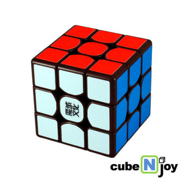
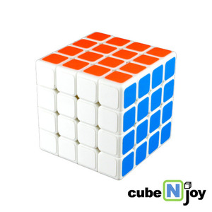
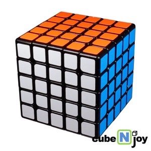
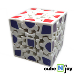
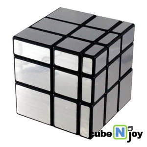
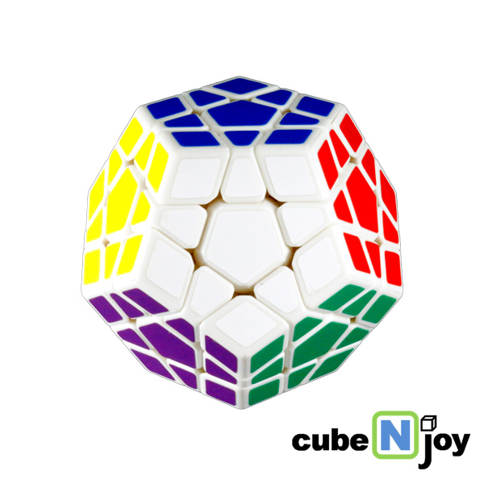
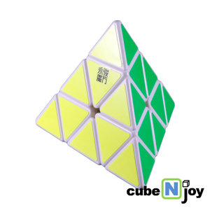
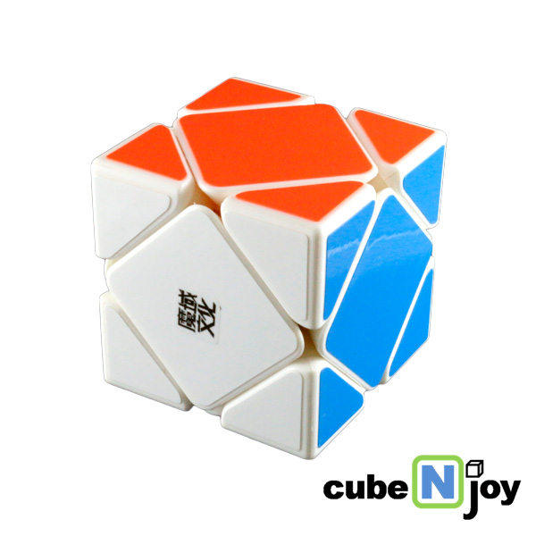

큐브의 종류들은 100개이상의 종류가 있다고 합니다.
하지만 우리는 100가지의 큐브를 다 설명 할 수 없으므로 10가지만 설명하겠다

333큐브는 가장 기본이 되는 큐브이다. 그래서 여러개의 큐브를 맞추려면 333큐브를 마스터하고 하면 도움이 많이 된다.

이 큐브는 333큐브 다음 단계인 큐브이고 가로에4칸,세로에4칸식 구성되어서 444큐브이다.

이 큐브는 444큐브 다음 단계인 큐브이고 가로에5칸,세로에5칸식 구성되어서 555큐브이다.

이 큐브는 기차 레일처럼 생겨서 레일큐브라고 하였다.

미러큐브는 딴 큐브와 다르게 각면의 색깔이 하나로 통일된 큐브이다.

이 큐브는 밑면이 5각형이고 12면체로 이루어진 큐브이다

이큐브는 모양이 피라미드 모양 같아서 이름이 피라밍크스이다

이 큐브는 대표적인 딥컷(트위스티 퍼즐의 종류 중 하나. 모든 회전이 정확히 반바 갈라져 돌아가는 큐브)이며 그 특징 때문에 333큐브 다음으로 많이 쓰인다